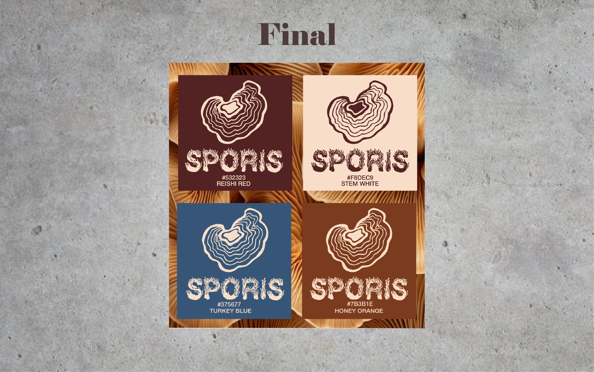
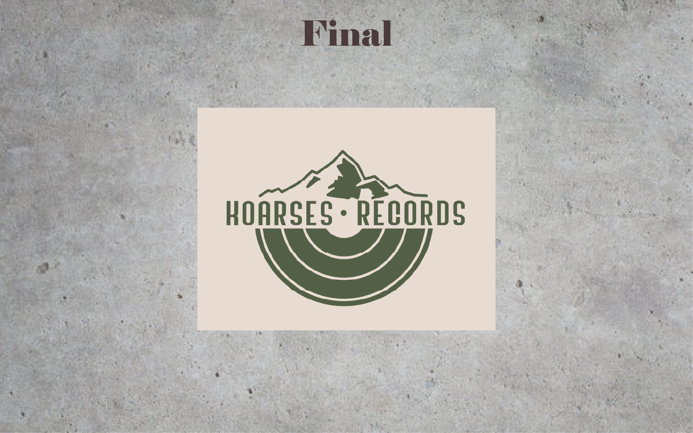
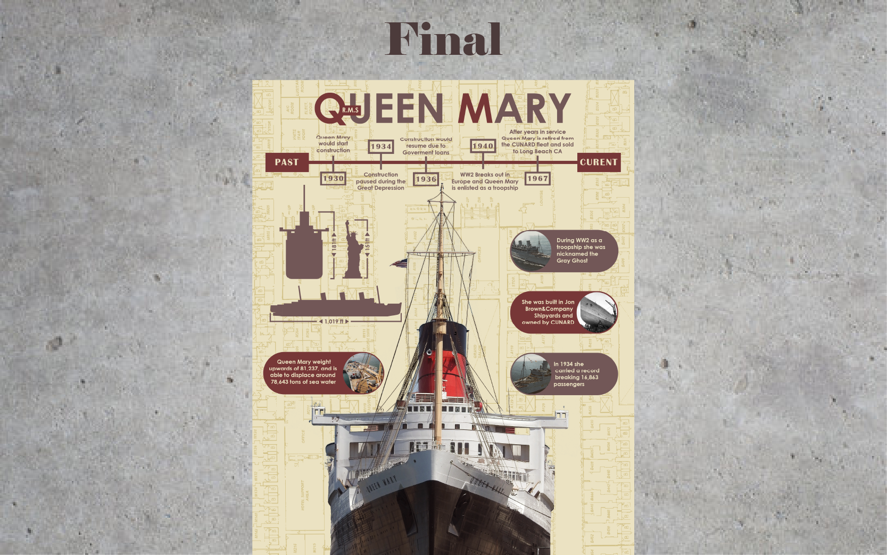

Project Example 1 - SPORIS - Spring 2024

For this project we were required to make a clothing bread themed around a concept or object. I wanted my brand to be themed around something that had creative potential.
So I created SPORIS, a clothing brand themed around fungus. Fungus are very diverse in shape, color, texture ect… which gave me a lot of visual elements that I could incorporate into
my design. The main icon is based on a rishi mushroom and the typography is influenced by mycelium growth.
Project Example 2 - KORIS RECORDS - Spring 2024

For this For project it was to help train with client commissions and complying with a list of required elements for the design. For Koris Records we had to create a record shop logo that
included mountain iconography. I decided on the design that harken back to more retro feeling colors and imagery. Both core elements are visually clear with the Mountain range and the record disk.
Project Example 2 - Queen Mary Infograph - Fall 2025

This is one of my personal favorites projects, which is to create a landmark infographic. Basically we picked a landmark we liked and created an infographic poster. For my poster I went with
the Queen Mary which is a 1930s era Ocean liner. Deciding on the composition was very difficult and took the most amount of time but I was eventually inspired by classic Oceanliner posters
of the art deco period. Making the background of the ships blueprints really helped my vision and the process became smooth after that. Information about the ship is easy enough to find
but knowing how much info to add without making it to scenes is important.